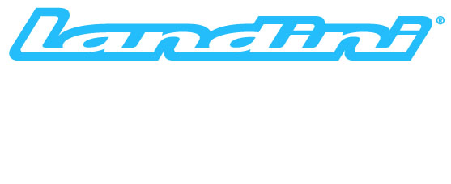

Tractores agrícolas de alta calidad
Somos distribuidores oficiales de Landini y McCormick en Extremadura, dos marcas históricas en el sector agrícola que forman parte del Grupo Argo, uno de los principales fabricantes de tractores del mundo.
Landini y McCormick ofrecen una amplia gama de tractores especializados y polivalentes, diseñados para satisfacer las necesidades de la agricultura moderna. Con más de 130 años de experiencia combinada, estas marcas son sinónimo de calidad, fiabilidad y tecnología.
Ofrecemos venta, financiación, servicio técnico especializado y recambios originales para toda la gama.

Diseñados para cultivos intensivos, viñedos y frutales.
Versátiles para todo tipo de trabajos agrícolas.
Para grandes explotaciones y trabajos pesados.
Ideales para pequeñas explotaciones y espacios reducidos.
Ruedas del mismo diámetro para trabajos especializados.
Asistencia técnica especializada y recambios originales.
Más de 130 años de experiencia combinada con tecnología moderna.
Tractores de alta calidad a precios competitivos con excelente equipamiento.
Modelos específicos para cada tipo de cultivo y necesidad.
Motores FPT (Fiat Powertrain Technologies) reconocidos por su durabilidad.
Nuestros tractores Landini y McCormick son perfectos para:
Tractores especializados con ancho reducido y gran maniobrabilidad.
Soluciones para horticultura, invernaderos y agricultura intensiva.
Equipos versátiles para manejo de ganado y producción de forrajes.
Tractores potentes para grandes superficies y labores pesadas.
Contacte con nosotros para más información, pruebas y financiación personalizada
Solicitar información